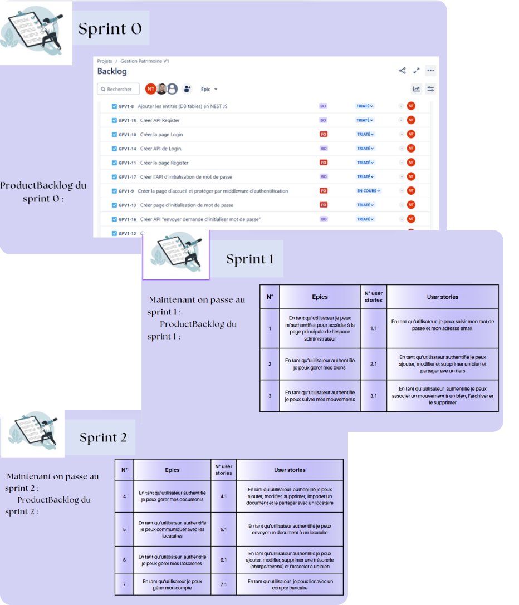
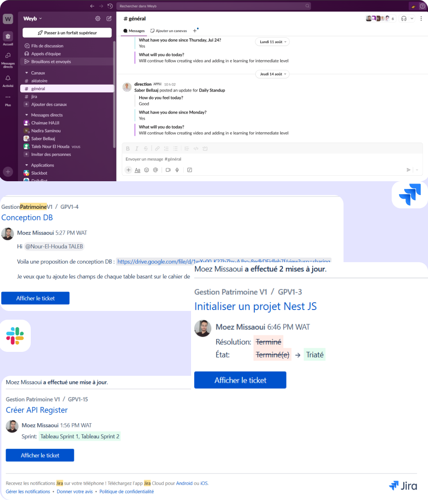
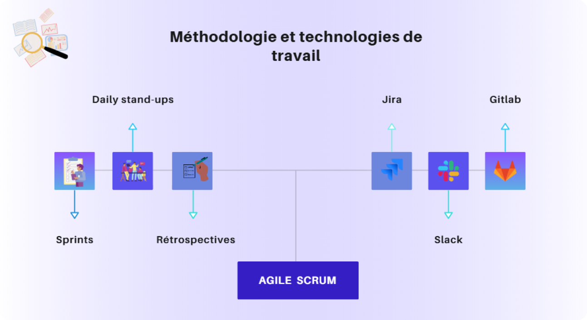
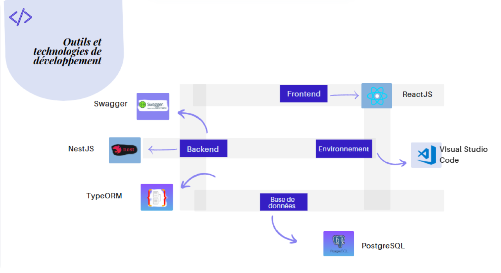
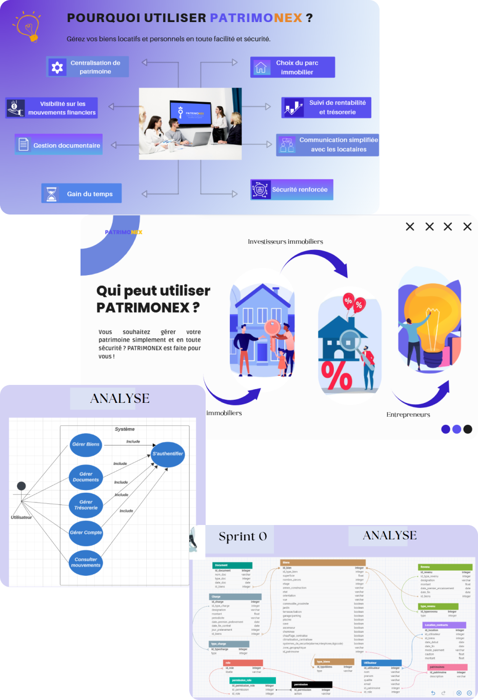
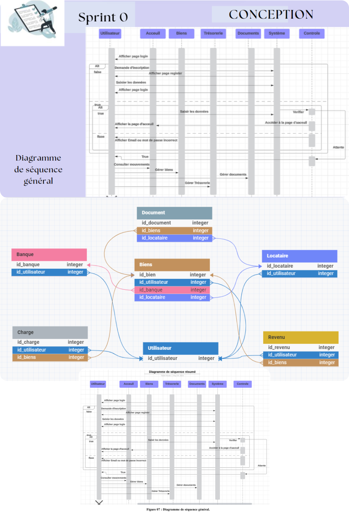
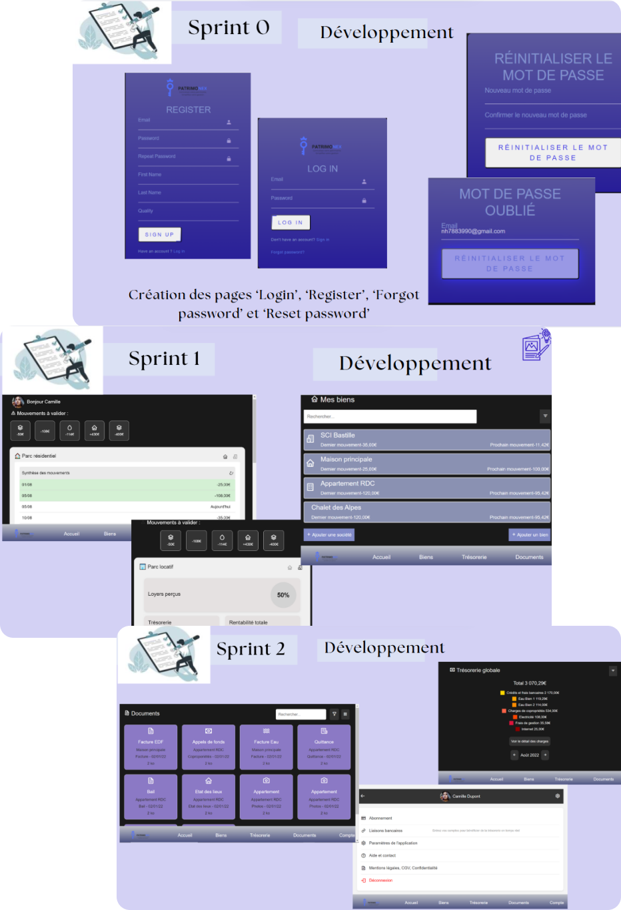
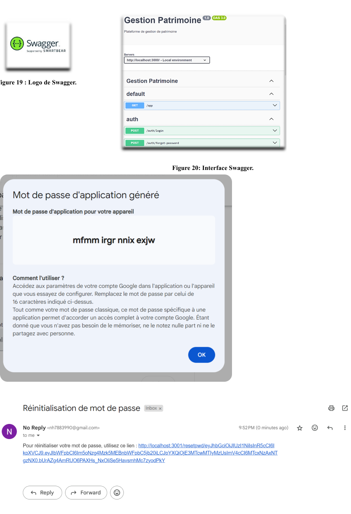

Patrimonex – Agile Project
This project was developed during my internship at Weyb as part of my Bachelor's degree. The goal was to build a platform called Patrimonex, dedicated to real estate asset management. The entire project was carried out using the Agile Scrum methodology, with iterative sprints, daily meetings, and continuous collaboration.
← Back to Portfolio 📄 View Internship ReportAgile Methodology


The project was divided into 2-week sprints. Each sprint included planning, development, testing,
and a retrospective.
We used Jira to share progress and identify blockers, while retrospectives
helped us continuously improve collaboration and efficiency.
Tools & Technologies Used


Project Steps




I actively contributed to every step of the Agile cycle: analysis, design, development, testing. On the technical side, I worked with NestJS, ReactJS, PostgreSQL, TypeORM, and documented APIs with Swagger.
Results & Learnings
✅ Delivered functional modules: authentication, asset management, financial monitoring, and document management.
✅ Improved technical skills with modern frameworks (NestJS, ReactJS, TypeORM).
✅ Learned Agile teamwork: sprint planning, stand-ups, retrospectives.
✅ Developed project management reflexes that prepare me for a future role as Agile Project Manager.